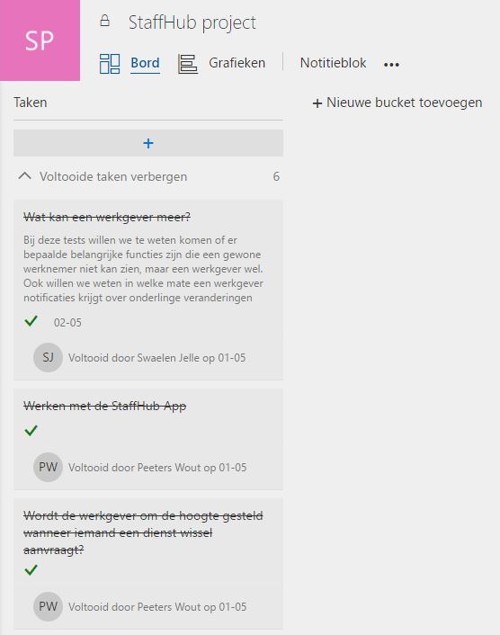
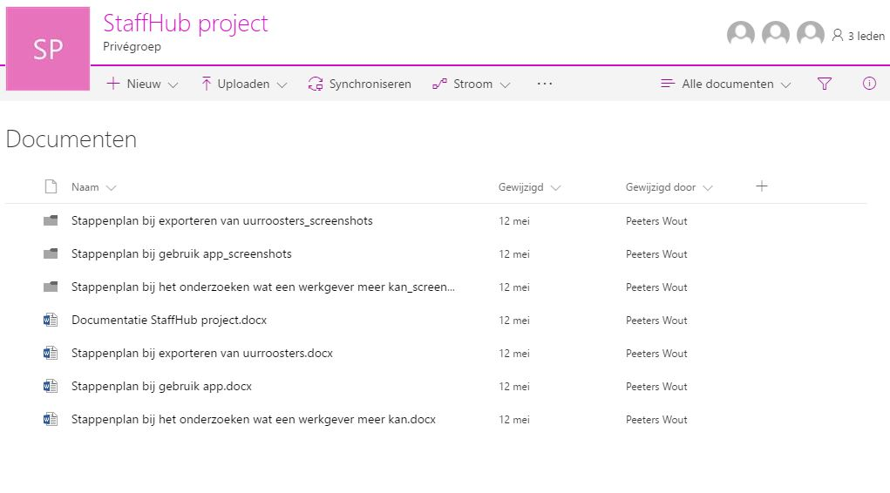
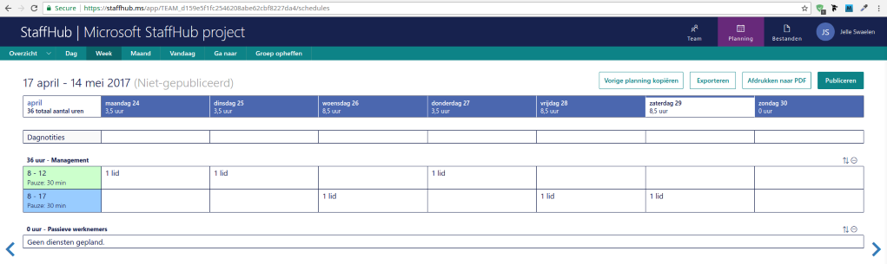
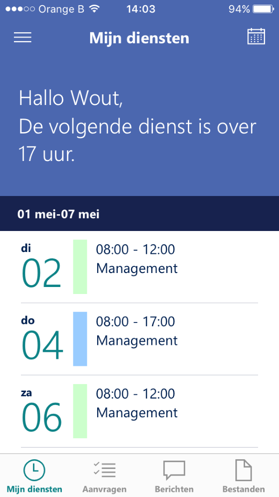

StaffHub is een tool die gebruikt kan worden om de uren op te geven van werknemers, maar je kan er nog veel meer mee doen. Het idee achter StaffHub is dat personeel dat altijd onderweg is naar klanten, hun uren weten zonder dat ze naar het kantoor moeten gaan. De tool geeft zelfs de mogelijk aan personeel om onderling op aanvraag shiften te wisselen of eventueel een private chat te openen met de werkgever of collega's om bepaalde dingen te bespreken.
StaffHub biedt niet alleen de mogelijkheid om de uurroosters door te geven aan werknemers. Je kan ook makkelijk uurroosters exporteren en extra berichten per toevoegen per dienst of per dag. Wanneer de uurrooster geëxporteerd wordt krijg je een Excel bestand waarin de uurrooster, uren per werknemer en het totaal werkuren van die periode staat.
In StaffHub heeft u de mogelijkheid om van uren te wisselen met een collega. In de app gaat u naar "aanvragen" en klikt u op het plusje. Vervolgens kiest u "dienst wisselen of aanbieden". Hier kan u de gewenste dienst die u wilt ruilen tegen een dienst van een andere werknemer. U heeft de mogelijkheid om een reden toe te voegen. Ook kan u zelf een eigen dienst aanbieden aan een ander teamlid.
Onze takenlijst op Microsoft Planner
Onze bestanden tijdens het werken aan het project
De browser versie van Microsoft StaffHub waar we de diensten regelen
Diensten in de Microsoft Staffhub App